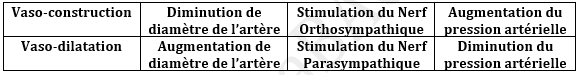

Activité Cardiaque et Pression Arterielle
Le myocarde est un muscle spécialisé qui assure le déplacement du sang dans l’appareil circulatoire, chez les mammifères est formé par quatre chambres ou cavité cardiaque (deux Oreillettes et deux Ventricules), trois chambres chez les oiseaux et 2 chez les grenouilles.
Chaque muscle cardiaque est formé par des fibres musculaires et chaque fibre est composé de myofibrille qui comporte Actine et Myosine et strie squaliforme.
+ Siège de l’automatisme cardiaque :
Après l’ablation du cœur Isolation si on le met dans le liquide de Ringer (Na+, K+, Ca2+ et glucose), on remarque qu’il est capable de se contracté et se relâche donc la source d’excitation cardiaque est automatique et le responsable de l‘automatisme cardiaque est le tissu nodal, le tissu nodal est formé par :
- Nœud Sinusal (Sinus veineux) : localisé d’une oreillette droite représente l’origine de St. Cardiaque spontané.
- Nœud Septal : localisé entre les deux oreillettes et responsable de la séparation de contraction (auriculaire et ventriculaire)
- Faisceau de His : branché au nœud septal.
- Réseaux de Purking : responsable de la st. Ventriculaire.
+ les enregistrements cardiaques :
a - l’appareil de l’enregistrement cardiaque est appelé Cardiographe et l’enregistrement obtenue est dite Cardiogramme.
Chaque cardiogramme est formé par des révolutions cardiaque et chaque battement est formé par :
- ab : systole auriculaire
- bc : Diastole auriculaire
- cd : Systole ventriculaire
- de : Diastole ventriculaire
Remarque :
* Les battements cardiaque sont régulièrement et de même amplitude donc le cœur à l’automatisme et obéit à la loi tout ou rien.
* La durée de diastole est plus longue que la durée de systole donc le cœur est infatigable.
* Au moment de Systole ventriculaire le cœur est inexcitable d’où la période réfractaire.
b - Les effets des stimulations ventriculaires :
Si l’excitation atteint les ventricules au cours de systole les cardiogrammes ne change pas alors le cœur est inexcitable au cours de systole.
Si l’excitation intervienne au moment de la diastole on obtient une contraction anticiper extrasystole suivie d’un diastole prolongé dite Repos Compensateur au cours duquel le cœur est inexcitable, alors le cœur est intétanisable.
c - Excitation du nœud sinusal :
Si l’excitation est portée directement sur le nœud sinusal pendant la diastole générale on obtient une systole anticiper ou extrasystole non suivi d’un repos compensateur.
La superposition des deux tracées normal et anormal montre qu’il y a un léger décalage du battement cardiaque.
d - Activité électrique du cœur :
Comme tous les muscles le cœur produit en se contractent des potentiels d’actions diffusés a travers l’organisme.
L’activité électrique du cœur peut être enregistré à partir d’un oscilloscope (Electrocardiogramme).
L’électrocardiogramme présente des ondes P,Q,R,S et T :
P : Onde de dépolarisation qui provoque la systole Auriculaire.
QRS : Onde de dépolarisation qui provoque la systole ventriculaire.
T : Onde de dépolarisation qui provoque la diastole ventriculaire.
e - Adaptation du rythme cardiaque avec les besoins de l’organisme :
Le rythme cardiaque dans les cas normal est de 75 bat/mn mais pendant les efforts musculaires on observe une augmentation du battement cardiaque jusqu’au 120 bat/mn et une augmentation du volume systolique VS et l’augmentation du débit cardiaque (quantité du sang qui traverse le faisceau sanguin durant une minute).
Débit cardiaque = F.C × V.S
On peut remarquer l’augmentation de l’utilisation de l’oxygène et l’augmentation de la pression artérielle (la pression exercée sur le faisceau sanguine par la Qtt du sang qui le traverse)
Pression artérielle = V.S × Resistance artérielle

+ Régulation du rythme cardiaque :
Durant les efforts musculaires on remarque une augmentation du rythme cardiaque fréquence cardiaque donc les nerfs contrôlent les rythmes cardiaques, il existe deux types de nerfs cardiaques :
1 - Nerfs moteurs :
- Nerf parasympathique « nerf vague ou X » : les corps cellulaires sont localisés dans le bulbe rachidien et les axones sont reliées avec le nœud sinusal, la section de ce nerf provoque l’augmentation du battement « Tachycardie » et la stimulation provoque la diminution du battement cardiaque « Bradycardie ».
- Nerf Orthosympathique : sont localisé dans la moelle épinière et le ganglion spinale (étoile), les axones sont reliés avec le nœud sinusal la section de ce nerf provoque une diminution et la stimulation provoque une augmentation du battement cardiaque.
2 - Nerfs sensitifs :
- Nerf de Hering : Existent dans le bulbe rachidien et les dendrites sont localisé dans le sinus carotidien, ce nerf conduit les messages nerveux du cœur vers le bulbe rachidien.
- Nerf de Cyon : existent dans le bulbe rachidien et les dendrites sont localisé dans le cross aortique, ce nerf conduit le message nerveux du cœur vers le centre nerveux.
Les sources de stimulation sur les nerfs sensitifs sont les variations de la pression artérielle locale.
+ Notion du médiateur chimique :
D’après l’expérience de Loewi, il a déterminé la mode d’action des nerfs cardiaques il expérimente sur deux cœurs de grenouille et il réalise une circulation d’un liquide physiologique entre deux le cœur N°1 est relié avec les nerfs moteurs mais le cœur N°2 est privé de ces nerfs.
Stimulation du nerf Orthosympatique du cœur N°1 provoque l’augmentation du battement cardiaque du cœur N°1 et après une durée le cœur N°2 répond alors on constate que le nerf Orthosympatique secrète une substance Noradrénaline agit pour l’accélération du battement sont rôle est comme Adrénaline hormone sécrété par les glandes surrénales
Stimulation du nerf parasympathique provoque la libération d’une substance appelé Acétylcholine agit par la diminution du battement cardiaque.
+ Régulation de la pression artérielle :
La pression artérielle est la pression exercée sur le faisceau sanguine par la Qtt du sang qui le traverse.
Chaque nerf excite ou chaque substance injectée provoque une augmentation du battement et vasoconstruction responsable de l’hypertension.
Chaque nerf stimulé ou substance injecté provoque une diminution du battement et vasodilatation responsable de l’hypotension.
Remarque :
Rôle de température : dans une température très basse on remarque une augmentation du battement avec l’augmentation de la température du milieu.
Rôle des ions : Na+ et K+ agissent pour la diminution du battement Bradycardie ; Ca2+ agit pour une accélération du battement Tachycardie et le liquide de Ringer provoque le battement Normale.
Echappement vagale : si on stimule le nerf Orthosympatique pendant une longue durée on remarque au début un augmentation du F.C suivit d’une diminution malgré la stimulation continue donc le cœur secret des enzymes pour la destruction de noradrénaline pour l’inhibition de son rôle. Pareil avec le Parasympathique.